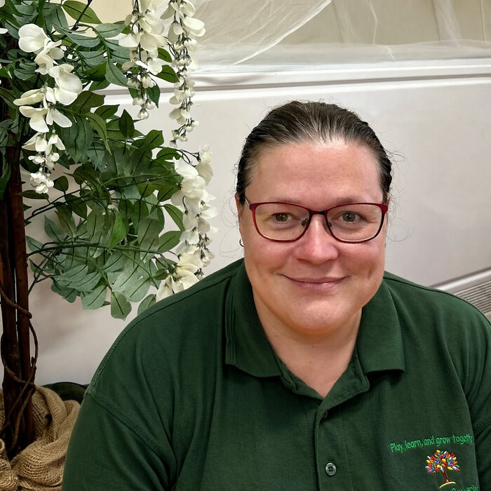
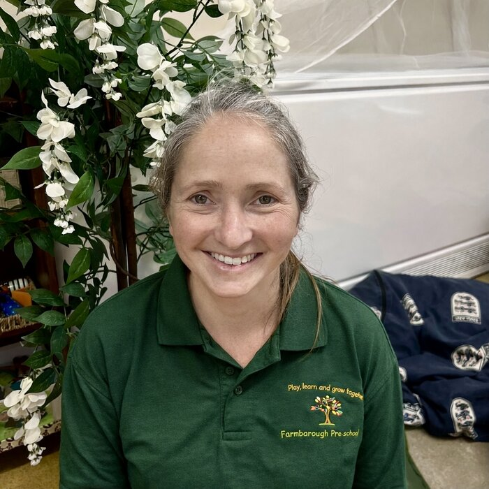
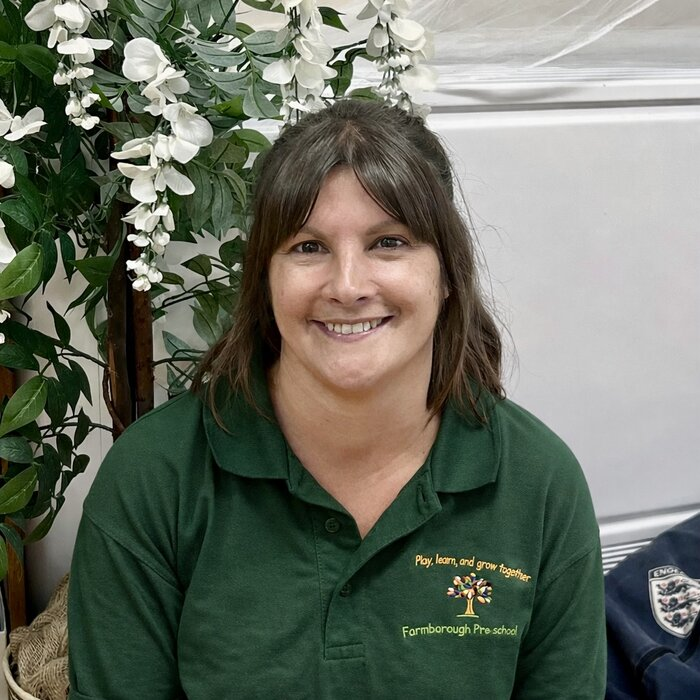

Welcome to Farmborough Preschool
A safe, secure and stimulating environment where children play, learn and grow together — proudly serving families in Bath & North East Somerset for over 45 years.
Our aim is simple
At Farmborough Preschool, our aim is to provide a safe, secure and stimulating environment that ensures equal opportunities for all children and their families.
For over 45 years, we have proudly provided early years education for children living in the Bath & North East Somerset area. We offer a nurturing and caring setting where children can play, learn and grow together, enjoying a wide range of enriching experiences.
In July 2025, our preschool room underwent a renovation under our new leadership team. The aim was to create a more calming and neutral environment to promote a nurturing space ready for learning. This summer we are upgrading our garden space too — thanks to our local community and our fundraising events, we have been able to raise the funds to make this possible.
Rooted in our local community
We have always maintained close links with Farmborough Church Primary School, and in January 2007 we moved into a specially converted room within the school.
Our space was refurbished inside and out thanks to funding from:
- Farmborough Church Primary School
- Bath & North East Somerset Council
- Two ‘Big Fund’ Lottery grants
This partnership helps ensure a smooth transition to primary school and keeps us firmly rooted in our local community.
Our new garden design
Our playground will undergo a huge refurbishment during the summer of 2026. The new garden design is now complete and will bring:
Undercover Area & Pergola
A new sheltered, all-weather space for outdoor play and learning.
Outdoor Pod for Learning
A brand new outdoor pod / office, purpose-built to support learning.
Astroturf & Drainage
New underground drainage with a levelled, low-maintenance astroturf surface.
Privacy Screen
A new privacy screen to keep our outdoor space safe and secure.
Water & Electrics
A new outdoor water supply and electrics, opening up even more possibilities for outdoor play.
These improvements will create a vibrant, engaging space where children can explore and learn outdoors safely.
Broadening every child's experience
We offer a variety of additional experiences throughout the year to support development across all areas of learning.
Forest School
A Forest School programme designed by our own team, delivered in Term 6 each year.
Zoolab Visits
Hands-on animal encounters with Zoolab, at least twice a year.
Spanish Lessons
Fun language sessions with Katie from Todo el Mundo, currently on Monday afternoons, fortnightly.
Fundraising & Community
Fundraising and community events run throughout the year, bringing families together.
Local Trips
Local trips around our village widen children's experience of the world beyond preschool.
Term dates
2026 – 2027 academic year
| Term | Start | End |
|---|---|---|
| Term 1 | Monday 7 September 2026 | Thursday 22 October 2026 |
| Term 2 | Tuesday 3 November 2026 | Friday 18 December 2026 |
| Term 3 | Tuesday 5 January 2027 | Friday 12 February 2027 |
| Term 4 | Monday 22 February 2027 | Thursday 25 March 2027 |
| Term 5 | Monday 12 April 2027 | Friday 28 May 2027 |
| Term 6 | Tuesday 8 June 2027 | Friday 23 July 2027 |
Your support means so much to us
As a registered charity, we are always grateful for community support. Donations can be made via PayPal or via a monthly voluntary parent contribution. A parent contribution form is included in our registration packs when enrolling your children with Farmborough Preschool.
Our Preschool
Farmborough Preschool is registered with Bath & North East Somerset Council (BANES) to provide funded Early Years Education for 3 and 4 year olds. We follow the Early Years Foundation Stage (EYFS) framework and the ‘Birth to 5 Matters’ curriculum guidance. We also welcome children from 2 years of age and are proud to be an Equal Opportunities Preschool, welcoming all children and families.
Our Curriculum & Approach
The Early Years Foundation Stage (EYFS) covers education from birth to five years. Most children are expected to achieve the Early Learning Goals by the end of their Reception year.
Our curriculum is delivered through a combination of:
- A purposeful and well-structured daily routine
- Adult-led group time sessions daily
- Free play and child-initiated play
We believe play is the main way young children learn. Through play, children develop confidence, independence and a love of learning. As early years professionals, we offer all children free choice during free play and teach children new skills through their own ideas — listening intently and offering ways to extend their learning whilst their play still remains theirs.
Charity Status & Committee
Farmborough Preschool is a registered charity run by a voluntary Management Committee of parents. The Committee works closely with staff to support the smooth running of the Preschool, coordinate fundraising events and apply for grants to enhance resources and opportunities.
Our Ethos
As members of the Pre-school Learning Alliance, we stay up to date with best practice in early years education. We follow the ethos of “learning through play”, encouraging children to:
- Value their efforts
- Build confidence
- Develop independence
- Feel secure and supported
What Ofsted Says About Us (2024)
Staff are wonderful role models and children have fun. As a result, children are motivated and eager to explore the curriculum on offer.
Ofsted, 2024Children have formed secure and trusting bonds with their key person, providing children with a sense of belonging and security. Children understand consistent boundaries that staff have put in place and follow instructions well.
Ofsted, 2024Parents report positively on the sharing of information. They comment on how their children have progressed well, particularly in their communication and language development. They find that staff have created a calm and nurturing environment to support their children's emotional well-being.
Ofsted, 2024Staff spend quality time with children to help them develop their understanding and recognition of emotions. Children enjoy matching visual pictures to the correct emotion face.
Ofsted, 2024How to Apply
Please contact our Preschool Manager by email or phone if you would like to find out about our enrolment process. We can discuss:
1. A Chat
Your needs and session availability, so we can find the right fit for your family.
2. A Show Around
Come and view our setting and chat to our management team in person.
3. Registration
Receive your registration forms and secure a space, subject to availability.
Current Fees
£7.00 / hour
A universal rate for all children. We accept children from 2 years of age, and offer funded places for eligible 2, 3 and 4 year olds.
Settling In
Before your child starts, we will invite you to a stay and play session (usually held within the final term before the summer holidays). During this session, you and your child can meet our team of educators, explore a sneak peek of our daily experiences, meet other parents, and ask any further questions.
If you feel your child needs it, we can also arrange settling in sessions so your child can attend preschool gradually. This can be arranged before your child starts, if necessary — we aim to be flexible and want to work alongside parents to best support children and their individual needs.
We recognise that every child is different, and that some children may have never been away from their parents or carers before, so they may need more time to settle into their new environment. We will work alongside you to make sure our families feel valued and supported from the very beginning.
Policies, procedures & documents
Our Terms and Conditions will be available to you within your registration pack. We ask kindly that you read these carefully and return a signed preschool copy to us — your home copy can stay with you to refer back to at any time.
Important Documents
- Child Safety & Welfare Statement (available on request)
- Ofsted Report (available on request)
To check your eligibility for 15 or 30 hours of funded childcare, please visit the Childcare Choices website.
From our preschool families
My little girl has now started Farmborough Preschool, following in her big brother's footsteps. Both thoroughly enjoy their time here and speak fondly of all staff.
Just wanted to say how happy my little one is at Farmborough Preschool. They do some lovely activities and he is flourishing there.
My little girl cannot wait to get to preschool and enjoys every moment. It is a caring and complete environment where all the children are smiling and happy.
Meet the Team
Our staff are DBS checked, registered with the Update Service, registered with Ofsted, and committed to continuous professional development.
Lisa Bristowe
- Level 3 Early Years Qualification
- Currently training for Level 5 Early Years Lead Degree — due to complete September 2026
- Paediatric First Aider — 12hr Blended Paediatric First Aid
- EYFS Safeguarding and Child Protection Training
- Level 2 Food Hygiene
“I've been working in the Early Years sector for 10 years. I am passionate about childcare and consider myself a hard working, fun loving and determined person who will always do her best to give the children the best possible opportunities to thrive.”

Gemma King
- Designated Safeguarding Lead — from September 2026
- Level 3 Support for Teaching
- Currently training for a Level 5 Early Years Lead Degree — due to complete December 2027
- Paediatric First Aider — 12hr Blended Paediatric First Aid
- EYFS Safeguarding and Child Protection Training
- Level 2 Food Hygiene
“Both my boys came to the Preschool before I started working here, so I've had experience of being a parent as well as an employee. I enjoy working with children and helping them grow ready for reception.”

Laura Cragg
- BTEC National Diploma (Level 3) in Early Years
- Paediatric First Aider — 12hr Blended Paediatric First Aid
- EYFS Safeguarding and Child Protection Training
- Level 2 Food Hygiene
- Training for a Level 3 Early Years SENCO qualification
“I have been working in the early years for over 20 years and love it! I have a keen interest in gardening and growing vegetables. I love singing, doing craft and reading, all of which I look forward to joining in with at preschool.”

Jo Varley
- Level 3 Diploma for Children and Young People's Workforce
- Paediatric First Aider — 12hr Blended Paediatric First Aid
- EYFS Safeguarding and Child Protection Training
- Level 2 Food Hygiene
- Forest School Trained
“I've been working with children for over 15 years and still believe it's such a privilege to be part of a child's early years; helping give them the confidence and belief that they can do anything they want to do and be anything they want to be.”
Run by our parent community
Farmborough Preschool is proudly run by a voluntary Management Committee made up of parents from our preschool community.
Self-financing & community powered
Farmborough Preschool is self-financing and non-profit making. Our Committee organises fundraising events throughout the year to help cover running costs and provide additional equipment and materials.
Sales & Donations
Bake sales and second-hand clothing sales — we rely on donations from our community.
Celebration Events
Preschool celebrational events offering different activities to raise funds.
Grant Applications
Including The National Lottery's Big Lottery Fund and The Sperring Trust.
Parents are encouraged to share ideas and get involved in fundraising activities.
We'd love to hear from you
-
📍
Farmborough Preschool
c/o Farmborough Church Primary School
The Street, Farmborough
Bath, BA2 0FY - ✉ farmboroughpreschool@gmail.com
- ☎ 07837 738361
- 🕑 Phone hours: Monday–Friday, 9:00am–3:00pm